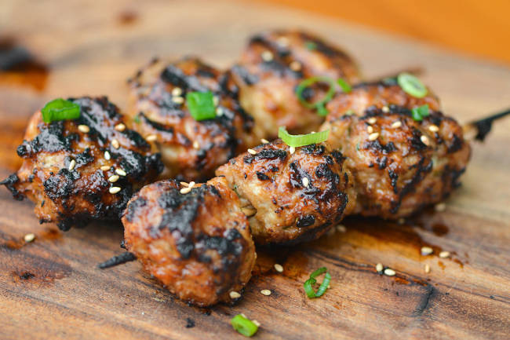

Цукуне — маленькие японские котлеты из куриного фарша на шпажках
Порции: 5
Время подготовки: 20мин
Время приготовления: 20мин
Ингредиенты
Для цукуне (куриных котлет)
1) 400 гр. Куриный фарш
2) ½ шт. Репчатый лук
3) 1 шт. Яичный желток
4) ½ см. Имбирь 1 ч.л. натертого
5) ¼ ч.л. Соль
6) 4 ст.л. Картофельный крахмал / катакурико
7) 2 ч.л. Растительное масло
Для соуса Якитори (соус тарэ)
1) 1 ст.л. Сахар
2) 2 ст.л. Соевый соус
3) 2 ст.л. Мирин
4) 3 ст.л. Вода
5) ½ ч.л. Катакурико /картофельный крахмал
Процесс приготовления соуса Тарэ (соуса Якитори)
1. Смешать все ингредиенты для соуса в маленькой миске.
2. Влить в небольшой ковш и на среднем огне довести до кипения, все время перемешивая,
чтобы сахар полностью растворился. Дождаться момента, когда соус начнет густеть и снять с огня.
Остудить.
Процесс приготовления цукунэ
1. Очень мелко нарезать репчатый лук.
2. В большую миску выложить куриный фарш, лук, желток, натертый имбирь,
соль и картофельный крахмал. Хорошо перемешать до очень липкого состояния.
3. Разделите на 15 частей и по форме напоминайте маленькие круглые или овальные котлеты.
4. Если вы готовите цукуне на углях, то за 30-40 минут до приготовления замочить в воде
бамбуковые шпажки.
5. На каждую шпажку насадить по 3 котлетки и обжарить над раскаленными углями до
готовности по 2-3 минуты с каждой стороны, постоянно обмазывая котлетки соусом.